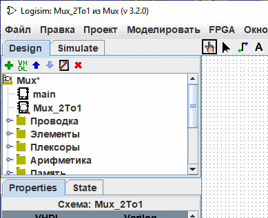
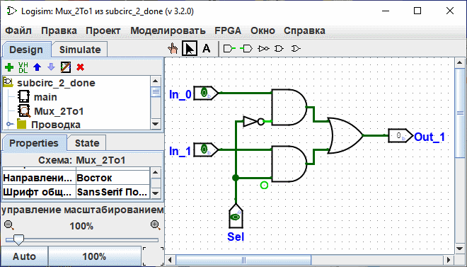

Создание схем
Каждый проект Logisim-evolution фактически представляет собой библиотеку схем. В своей простейшей форме проект содержит только одну схему (по умолчанию называемую "main"), но вы можете легко добавить другие:
для этого нажмите кнопку  на панели инструментов над Навигатором, либо щелкните правой кнопкой мыши на корне дерева в Навигаторе, либо выберите в меню | Проект |→| Добавить схему... |, а затем введите имя для новой схемы.
на панели инструментов над Навигатором, либо щелкните правой кнопкой мыши на корне дерева в Навигаторе, либо выберите в меню | Проект |→| Добавить схему... |, а затем введите имя для новой схемы.
Допустим, мы хотим построить мультиплексор 2-в-1 с названием Mux_2To1. После добавления схемы окно программы будет выглядеть следующим образом:

В навигаторе видно, что проект теперь содержит две схемы: main и Mux_2To1. Logisim-evolution отображает увеличительное стекло поверх значка просматриваемой в данный момент схемы; кроме того, имя этой схемы выводится в заголовке окна.
После сборки схемы мультиплексора 2-в-1 мы получим следующий вид:

Далее: Использование подсхем.